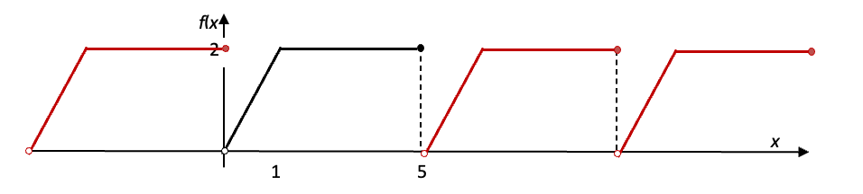

Week 1: Revision and Introduction to Fourier Series
The topic of Fourier Analysis is about taking certain types of function and realising that they can be expressed as a sum or integral of trigonometric functions of differing frequencies, phases and amplitudes. We know a great deal about trigonometric functions, so this can then provide a powerful analytical approach to topics such as signal processing, antenna theory, the science of music (and art), and image processing. It is also part of many traditional applied mathematics approaches to topics such as partial differential equations and radiation patterns of horn antennas (including heat conduction calculations, which was the area within which Fourier developed these mathematical ideas).
1 Terminology and background
Many physical processes are periodic - that is, they repeat themselves exactly at regular intervals. The idea of Fourier Analysis is to represent these processes by a combination of sine and cosine functions, instead of by polynomials. Series formed in this way are called Fourier Series. Finding the coefficients of the sine and cosine functions is called Fourier Analysis, or harmonic or spectral analysis. One of the most important applications of this approach is in the analysis of waveforms, or signals: if we can find the right combination of sine waves, for example, which will represent the signal, then we know what frequencies make up that signal. We are going to put this aside for now and concentrate on the maths required but will revisit applications later.
2 Transforming Functions and Graphs
|
|
|
|
|
|
|
3 Periodic Functions and Graphs
For a function with
![\begin{tikzpicture} [line cap=round,line join=round,>=triangle 45,x=1.0cm,y=1.0cm]
\draw [color=cqcqcq,, xstep=1.5708cm,ystep=0.5cm] (-3.5,-1.5) grid (12.75,1.5);
\draw[->,color=black] (-3.1,0.) -- (13.,0.) node[below] {\footnotesize{$x$}};
\foreach \X/\Z in {{-pi}/-\pi, {-pi/2}/-\frac{\pi}{2},{pi/2}/\frac{\pi}{2},{pi}/\pi,{3*pi/2}/\frac{3\pi}{2},{2*pi}/2\pi,{5*pi/2}/\frac{5\pi}{2},{3*pi/3\pi}} {\draw (\X,3pt)--(\X,-3pt) node[below] {$\Z$};}
\draw[->,color=black] (0.,-1.7) -- (0.,1.7) node[right]{\footnotesize{$y$}};
\foreach \y in {-1.,-0.5,0.5,1.,1.5}
\draw[shift={(0,\y)},color=black] (2pt,0pt) -- (-2pt,0pt) node[left] {\footnotesize $\y$};
\draw[color=black] (0pt,-10pt) node[right] {\footnotesize $0$};
\clip(-3.1,-1.7) rectangle (14.,1.7);
\draw[line width=2.pt,color=blue,smooth,samples=100,domain=-3.2:12.750] plot(\x,{cos(((\x))*180/pi)});
\foreach \x in {0,..,{2*pi}/2\pi}
\draw [line width=2.pt,color=red,smooth,samples=100,domain=0:6.2] plot(\x,{cos(((\x))*180/pi)});
\end{tikzpicture}](images/img-0001.svg)
then
The shortest horizontal distance over which a periodic function repeats is called the |
|
and is usually given the symbol |
|
The number of times it repeats in a horizontal distance of 1 is called the frequency and can be calculated from: |
|
The number of times it repeats in a horizontal distance of is called the angular frequency and can be calculated from: |
|
Rearranging the above formulae gives us some other useful formulae: |
|
All periodic functions have the property that |
From Preparation (Exercise 4) we can now see that
-
Define
-
Period,
-
Frequency,
-
Angular frequency,
-
-
For the cosine wave shown above
-
what is the period?
-
what is the frequency?
-
what is the angular frequency?
-
-
Think about the relationship . What does it mean? Why is it the algebraic definition of a periodic function? Use the cosine wave as an example to think about it.
-
For each of the functions below, sketch the function and calculate both the period and amplitude:
-
,
-
,
-
,
-
,
-
,
[Remember that if we write we mean ]
-
-
Calculate the period of and then sketch it.
4 Continuous, discontinuous, piecewise continuous and discrete functions
A continuous function is one where |
|
A discontinuous function is one where |
|
The gaps are called |
Note
A function cannot take both values at the discontinuity (why?). The value that is included is represented by a filled circle, , and the value which is not valid with an empty circle, .
A discontinuous function, like that shown above, is piecewise continuous because it is continuous between the discontinuities.
This is different from a discrete function which is only defined at discrete values of the domain.
![\begin{tikzpicture}
\draw[help lines, color=gray!30, dashed] (0,0) grid (6,6);
\draw[->,thick,color=black] (-0.5,0) -- (6.5,0) ;
\draw[->,thick, color=black] (-0.5,0) -- (6.5,0) ;
\foreach \x in {0,1,...,6}
\draw[shift={(\x,0)},color=black] (0pt,0pt) -- (0pt,-3pt) node[below]
{$\x$};
\draw (-0.1,6.3) node[left] {$y$};
\draw (6.5,-0.2) node[below] {$x$};
\draw[->, color=black] (0,-0.5) -- (0,6.5) ;
\foreach \y in {1,...,6}
\draw[shift={(0,\y)},color=black] (0pt,0pt) -- (3pt,0pt) node[left]
{$\y $};
\end{tikzpicture}](images/img-0002.svg)
5 Piecewise functions
We’re used to defining a function with a single algebraic expression, eg . A piecewise function typically needs more than one part to the definition.
Example 1.
What is the equation of the red line?
What range of is this valid over?
What is the equation of the blue line?
What range of is this valid over?
We combine these definitions in the format:
![\begin{tikzpicture} [line cap=round,line join=round,>=triangle 45,x=1.0cm,y=1.0cm]
\draw [color=cqcqcq,, xstep=1cm,ystep=1cm] (-3.5,-1.5) grid (3.5,3);
\draw[->,color=black] (-3.1,0) -- (3.,0) node[below] {\footnotesize{$x$}};
\foreach \x in {-3,-2,-1,0,1,2}
\draw[shift={(\x,0)},color=black] (0pt,0pt) -- (0pt,-3pt) node[below]
{$\x$};
\draw[->,color=black] (0.,-1.7) -- (0.,3) node[left]{\footnotesize{$f(x)$}};
\foreach \y in {-1,0,...,2}
\draw[shift={(0,\y)},color=black] (2pt,0pt) -- (-2pt,0pt) node[left] {\footnotesize $\y$};
\draw[color=black] (0pt,-10pt) node[right] {\footnotesize $0$};
\foreach \x in {-3,0}
\draw[line width=2.pt,color=red,smooth,samples=100,domain=-3:0] plot(\x,\x+2);
\foreach \x in {0,3.50}
\draw[line width=2.pt,color=blue,smooth,samples=100,domain=0:3.5] plot(\x,2);
\end{tikzpicture}](images/img-0003.svg)
Example 2.
Now consider this periodic function. Notice that at the discontinuities we’ve included circles to indicate which bits are part of the function
What is the equation of the red line?
What range of is this valid over?
The other parts of this function could be written using other straight lines, but since this function is periodic, we can write , so our full algebraic description of the function is
5.1 From algebra to graph…
Sometimes a function needs even more parts to its algebraic description. Consider this
This is how we decode this:
This first part
means
“Between and , the function is given by ”
This last part
means “The function is periodic, and the period is 5.”

Note
The details about which end points are included in the function, and the solid or empty circles, are included here for completeness and because you’re mathematicians who should know about it. However, for the purposes of Fourier Analysis this subtlety is rarely, if ever, necessary. Expect me to fudge it or ignore it often.
Example 3.
The following functions have been described analytically
Between and the function value is 3
So, the function could be defined
Between and the function value is x
So, the function could be defined
Between and the function value is 0
The function repeats every 6 units
between and the function value is
The function repeats every 6 units
Exercise 1. Piecewise Functions
For each of the following functions, sketch the graph. For those functions which are periodic, state the period and sketch the graph over at least 3 periods.
Write the following periodic functions in algebraic form:
6 Odd and even functions
Definition 1. Odd and Even Functions
if
if
![\begin{tikzpicture} [line cap=round,line join=round,>=triangle 45,x=0.85cm,y=0.85cm]
\draw [color=cqcqcq,, xstep=1.5708cm,ystep=0.5cm] (-6.5,-1.5) grid (6.75,1.5);
\draw[->,color=black] (-6.2,0.) -- (6.2,0.) node[below] {\footnotesize{$x$}};
\foreach \X/\Z in {{-2*pi}/-2\pi,{-3*pi/2}/-\frac{3\pi}{2},{-pi}/-\pi, {-pi/2}/-\frac{\pi}{2},{pi/2}/\frac{\pi}{2},{pi}/\pi,{3*pi/2}/\frac{3\pi}{2},{2*pi}/2\pi} {\draw (\X,3pt)--(\X,-3pt) node[below] {$\Z$};}
\draw[->,color=black] (0.,-1.7) -- (0.,1.7) node[right]{\footnotesize{$y$}};
\foreach \y in {-1.,-0.5,0.5,1.,1.5}
\draw[shift={(0,\y)},color=black] (2pt,0pt) -- (-2pt,0pt) node[left] {\footnotesize $\y$};
\draw[color=black] (0pt,-10pt) node[right] {\footnotesize $0$};
\clip(-6.2,-1.7) rectangle (6.2,1.7);
\draw[line width=2.pt,color=qqwuqq,smooth,samples=100,domain=-6.2:6.20] plot(\x,{cos(((\x))*180/pi)});
\end{tikzpicture}](images/img-0004.svg)
![\begin{tikzpicture} [line cap=round,line join=round,>=triangle 45,x=0.85cm,y=0.85cm]
\draw [color=cqcqcq,, xstep=1.5708cm,ystep=0.5cm] (-6.5,-1.5) grid (6.75,1.5);
\draw[->,color=black] (-6.2,0.) -- (6.2,0.) node[below] {\footnotesize{$x$}};
\foreach \X/\Z in {{-2*pi}/-2\pi,{-3*pi/2}/-\frac{3\pi}{2},{-pi}/-\pi, {-pi/2}/-\frac{\pi}{2},{pi/2}/\frac{\pi}{2},{pi}/\pi,{3*pi/2}/\frac{3\pi}{2},{2*pi}/2\pi} {\draw (\X,3pt)--(\X,-3pt) node[below] {$\Z$};}
\draw[->,color=black] (0.,-1.7) -- (0.,1.7) node[right]{\footnotesize{$y$}};
\foreach \y in {-1.,-0.5,0.5,1.,1.5}
\draw[shift={(0,\y)},color=black] (2pt,0pt) -- (-2pt,0pt) node[left] {\footnotesize $\y$};
\draw[color=black] (0pt,-10pt) node[right] {\footnotesize $0$};
\clip(-6.2,-1.7) rectangle (6.2,1.7);
\draw[line width=2.pt,color=qqwuqq,smooth,samples=100,domain=-6.2:6.2] plot(\x,{sin(((\x))*180/pi)});
\end{tikzpicture}](images/img-0005.svg)
Exercise 2.
State whether the following functions are odd or even.
For each of the following function, sharing the work between you
decide whether you think it is even or odd by trying a few positive/ negative numbers
sketch or plot the graph - make a note of any observation that you make.
7 Determining whether a function is odd or even
Picking values and evaluating and , or drawing graphs, is a really good way of
-
disproving that a function is odd or even (ie proving it is not odd, or not even)
-
giving us a good hint that it probably is odd or even.
However, in order to prove that something is odd or even, we need algebra.
Example 4.
Prove that is neither even nor odd.
Prove that is even.
Solution: We’re going to start with , and work our way through to .
Determine whether an odd function, multiplied by another odd function, is odd, even, or neither even nor odd.
Solution: Let
which means that
Now if and are both odd functions, we can say that
which means that equation ( 2
) can be written as
and comparing equations ( 1
) and ( 3
) we see that
which means that we can say is even, because it satisfies the definition of an even function. Since we have assumed nothing about and except that they are odd, we have proved that any odd function, multiplied by another odd function, gives an even function.
Exercise 3. Odd/even functions
Ten functions are defined as follows:
State/guess/reason whether each function is odd or even or neither from your knowledge of it or similar functions.
Plot the functions. Do they look odd, even or neither?
Pick one odd and one even function from ( 4
) and prove that your result is correct.
Complete the following table, working alone or together. Use a mixture of reasoning, pictures, experimenting and symbolic work.
odd odd
odd + odd
even even
even + even
odd even
odd + even
odd neither
odd + neither
even neither
even + neither
Sketch each of the following functions, state whether the function is odd, even or neither and determine its Fourier series.
where and
where and
8 Combining sinusoids
Consider the function
Figure 1 shows for and .
![\begin{tikzpicture} [line cap=round,line join=round,>=triangle 45,x=1cm,y=1cm]
\draw [color=cqcqcq,, xstep=1cm,ystep=1cm] (-7.,-2.) grid (7.,2.);
\draw[->,color=black] (-7.,0.) -- (7.,0.);
\foreach \x in {-7.,-6.,-5.,-4.,-3.,-2.,-1.,1.,2.,3.,4.,5.,6.}
\draw[shift={(\x,0)},color=black] (0pt,2pt) -- (0pt,-2pt) node[below] {\footnotesize $\x$};
\draw[->,color=black] (0.,-2.) -- (0.,2.);
\foreach \y in {-2.,-1.,1.,2.}
\draw[shift={(0,\y)},color=black] (2pt,0pt) -- (-2pt,0pt) node[left] {\footnotesize $\y$};
\draw[color=black] (0pt,-10pt) node[right] {\footnotesize $0$};
\clip(-7.,-2.) rectangle (7.,3.);
\draw[line width=1.pt,dash pattern=on 1pt off 1pt,color=qqwuqq,smooth,samples=100,domain=-7.0:7.0] plot(\x,{sin(((\x))*180/pi)});
\draw[line width=1.pt,dash pattern=on 1pt off 1pt,color=ccqqqq,smooth,samples=100,domain=-7.0:7.0] plot(\x,{0.5*sin((2.0*(\x))*180/pi)});
\draw[line width=2.pt,color=qqqqff,smooth,samples=100,domain=-7.0:7.0] plot(\x,{0.5*sin((2.0*(\x))*180/pi)+sin(((\x))*180/pi)});
% \begin{scriptsize}
\draw[color=black] (0.3,1.8) node {$y$};
\draw[color=black] (6.6,-0.4) node {$x$};
\draw[color=qqwuqq] (-5,2.5) node {$---y=\sin x$};
\draw[color=ccqqqq] (-1,2.5) node {$---y=0.5\sin(2x)$};
\draw[color=qqqqff] (4,2.5) node {$---y=\sin x+ 0.5\sin(2x)$};
% \end{scriptsize}
\end{tikzpicture}](images/img-0006.svg)
Exercise 4.
Consider the function Use link above to access the Geogebra file.
Pick an integer value for and any value of . What is its period (exactly)?
Repeat (a) for different values of and (integer) What is its period?
What is the period of a wave in the form
where is an integer? Does it matter what and are? Does it matter what is?
What happens if we use cosines, or mix sines and cosines. For example,
Extension activity
How would you find the period of a wave
where there is no restriction on the values for and .
Use your method to find the period of .
Check by plotting the graph.
9 Fourier’s Theorem
A periodic function of period which satisfies certain conditions (known as the Dirichlet conditions), may be represented by an infinite series of sines and cosines called a Fourier series, of the form:
Here the and are constants which will vary according to what the function is. That is, provided satisfies the Dirichlet conditions, then for appropriate values of the so-called Fourier coefficients , , ,... , , ,... this infinite series will converge to the value of the function at any point where the function is defined.
In other cases, functions may be represented by integrals involving sines and cosines, but this should not be surprising, since an integral is just a particular sort of continuous limiting sum. The process of finding the right combination of sines and cosines for a given function is called Fourier analysis.
Definition 2. The Dirichlet conditions, (Peter Dirichlet (1805-1859))
must be defined and single valued: that is, for each value of there is one and only one value of . (Thus, satisfies this condition but does not.)
must be continuous or have a finite number of finite discontinuities within the periodic interval.
and must be piecewise continuous in the periodic interval.
Definition 3. Fourier coefficients
The Fourier Series is:
If the Dirichlet conditions are satisfied then the Fourier coefficients are found by using the formulae:
where .
Note, that as might be expected with any mathematics involving trigonometric functions, these formulae are much simplified when period .
You may sometimes see the Fourier Series presented in terms of , and sometimes for a function whose period is :
Definition 4. Fourier series with period
If a periodic function of period with the property can be expanded as a Fourier series, then that series is given by
where the Fourier coefficients are given by:
where .
Whether you express the Fourier series in terms of the dependent variable or depends upon the nature of the waveform you are attempting to model. If it is a time series, then it is usual to use ; if it is a spatial function i.e. a real physical shape, then it is normal to use .
Example 5. Find the Fourier series
Find the Fourier series for the following function:
where
Solution